Yearning for the Infinite
Art Installation
The main film
Made with FZX-collective for Tate Modern Metropolis exhibition, first performance on Feb 29th 2020.A fluid, visual meditation on the interaction between cosmos, life and humanity.
None of the imagery in this film is real. It has all been generated using GAN and machine learning. A combination of computer CG renders and curated imagery to base the model - We explore how mankind, past, present and future fit into the timeline of nature.
Interview on worldwide FM
Credits
Artists : Xander Steenbrugge, James Beej Harford (IAMWE)
Music curation : Global Roots Worldwide FM
Producer : Richard Welsh - Decent Partners
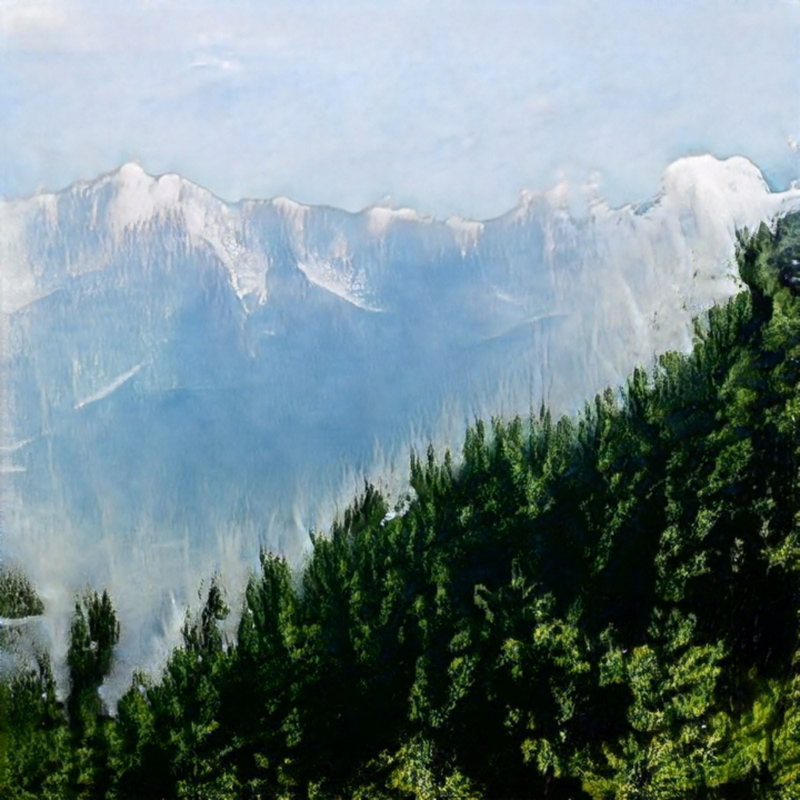
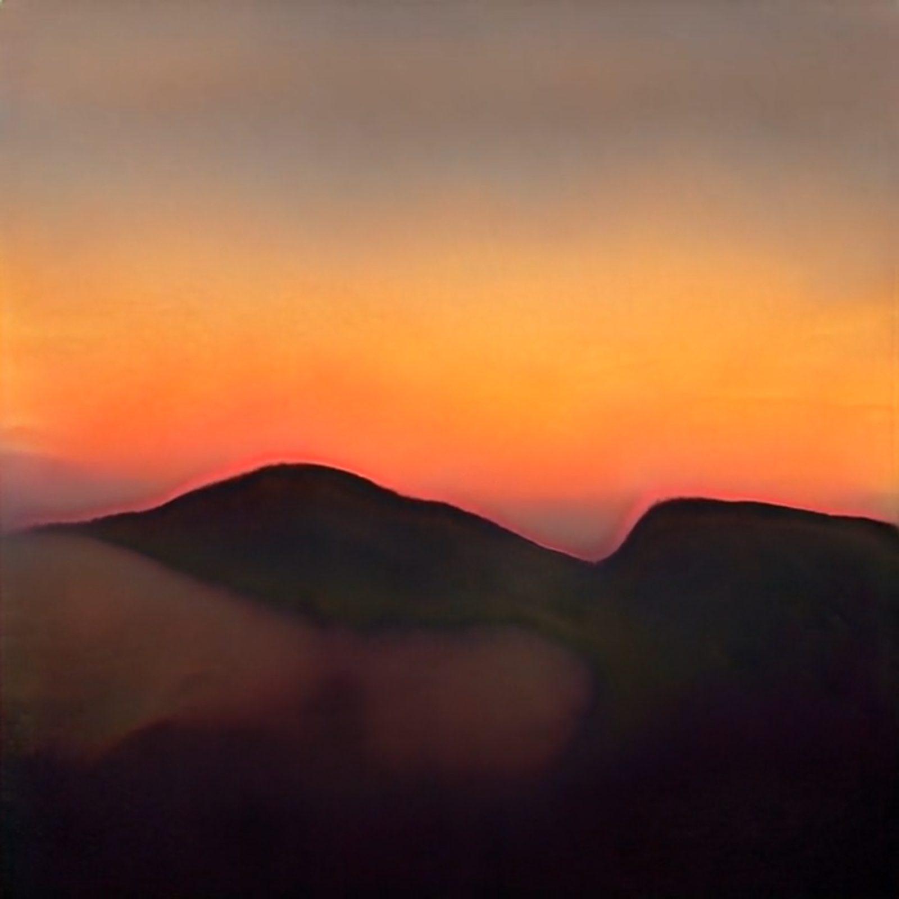
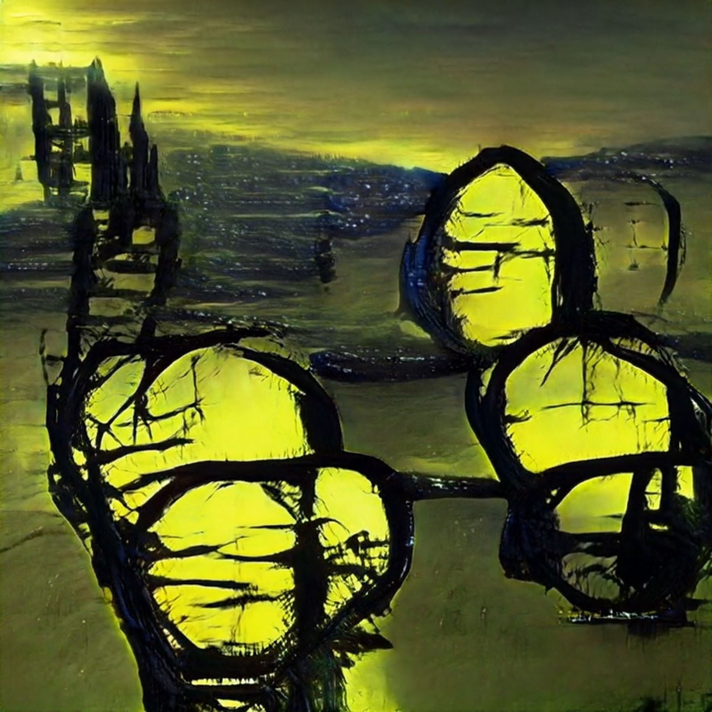

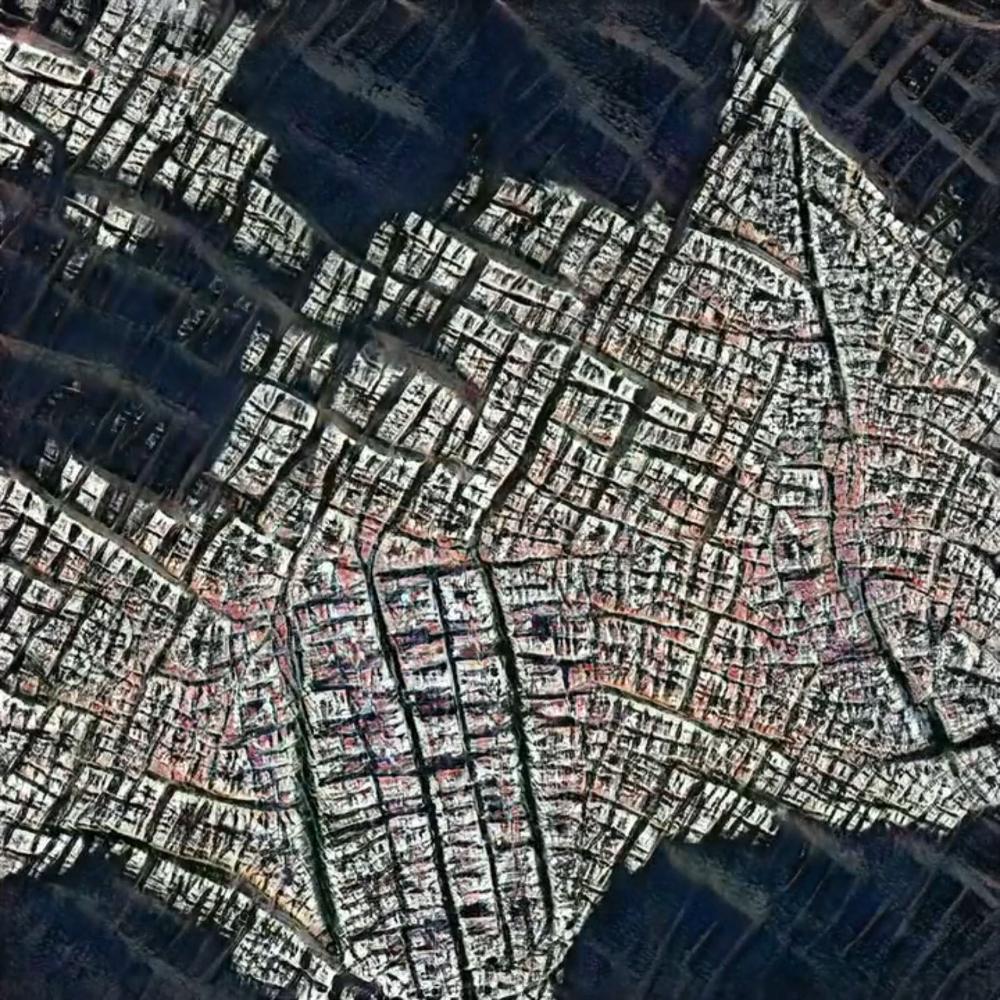
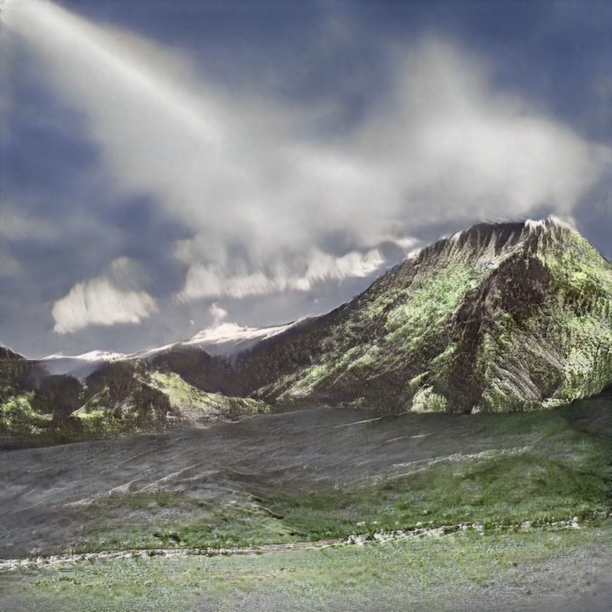
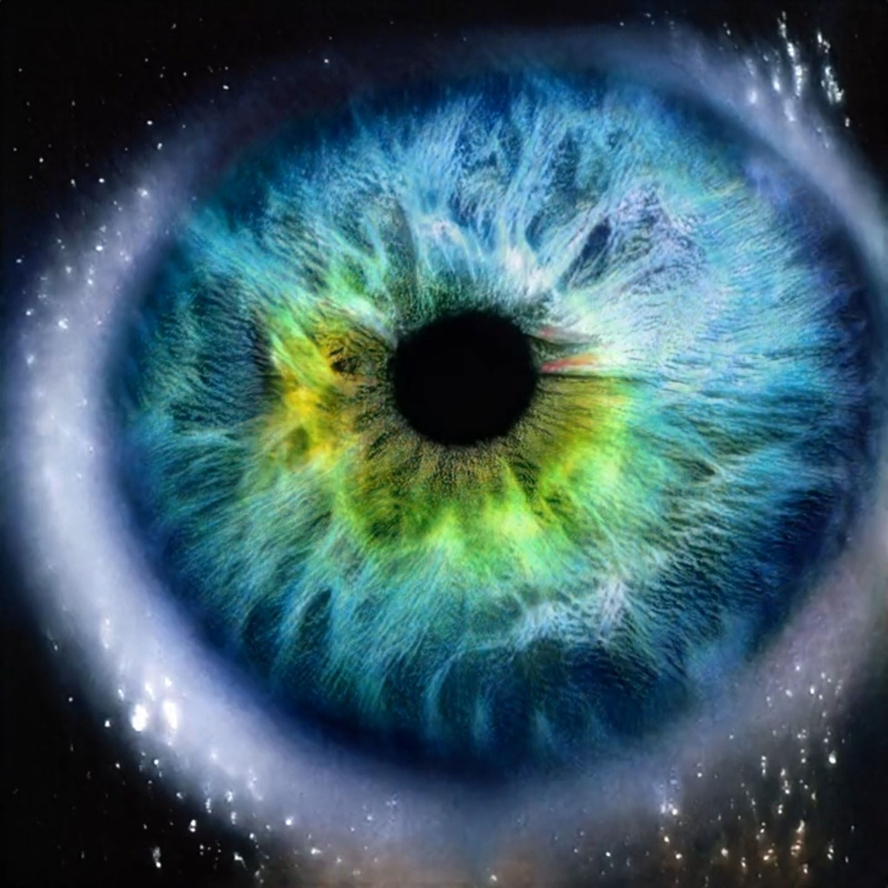
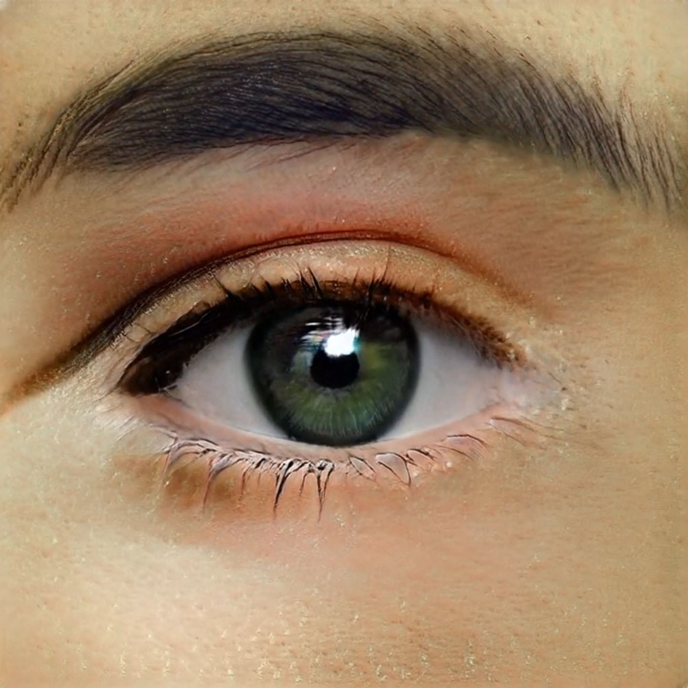
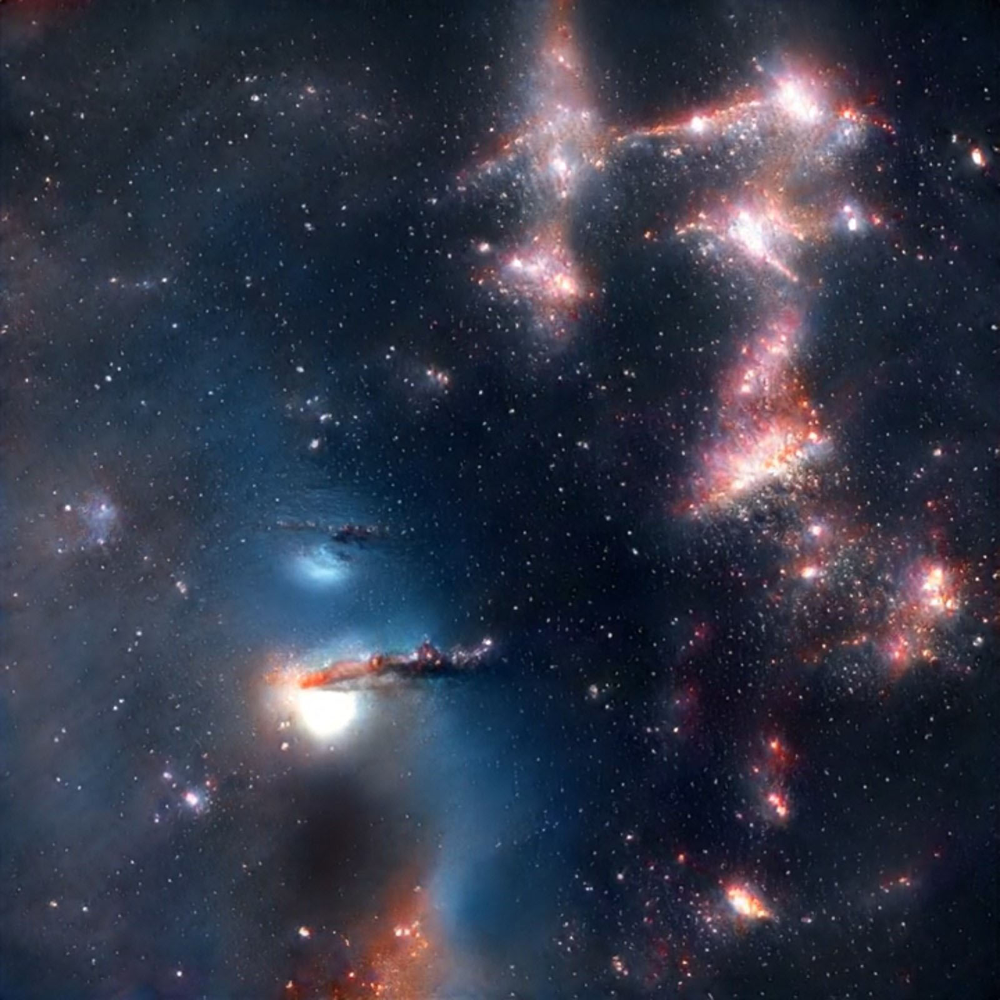
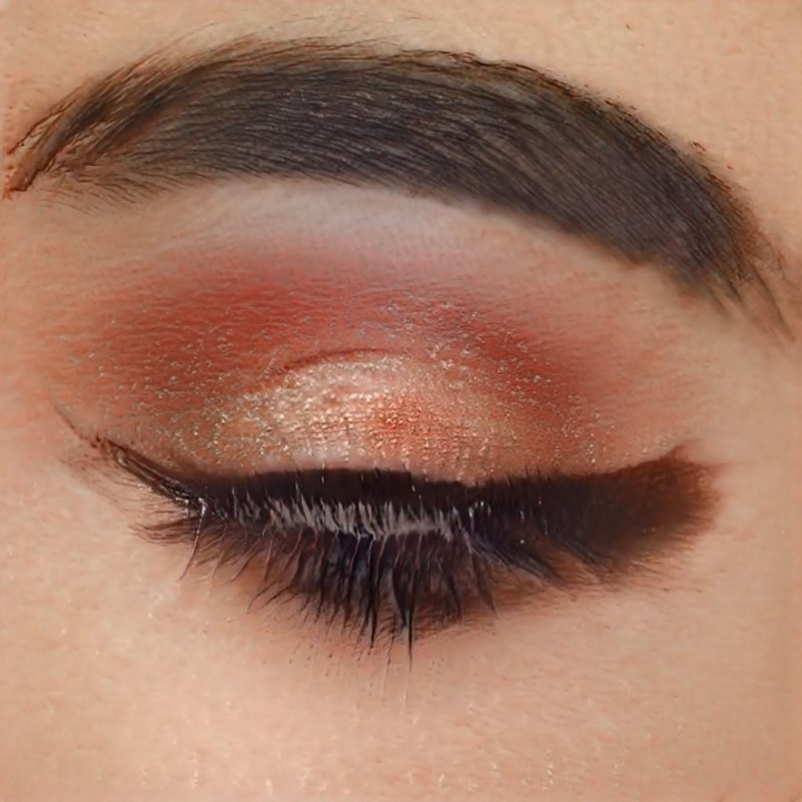
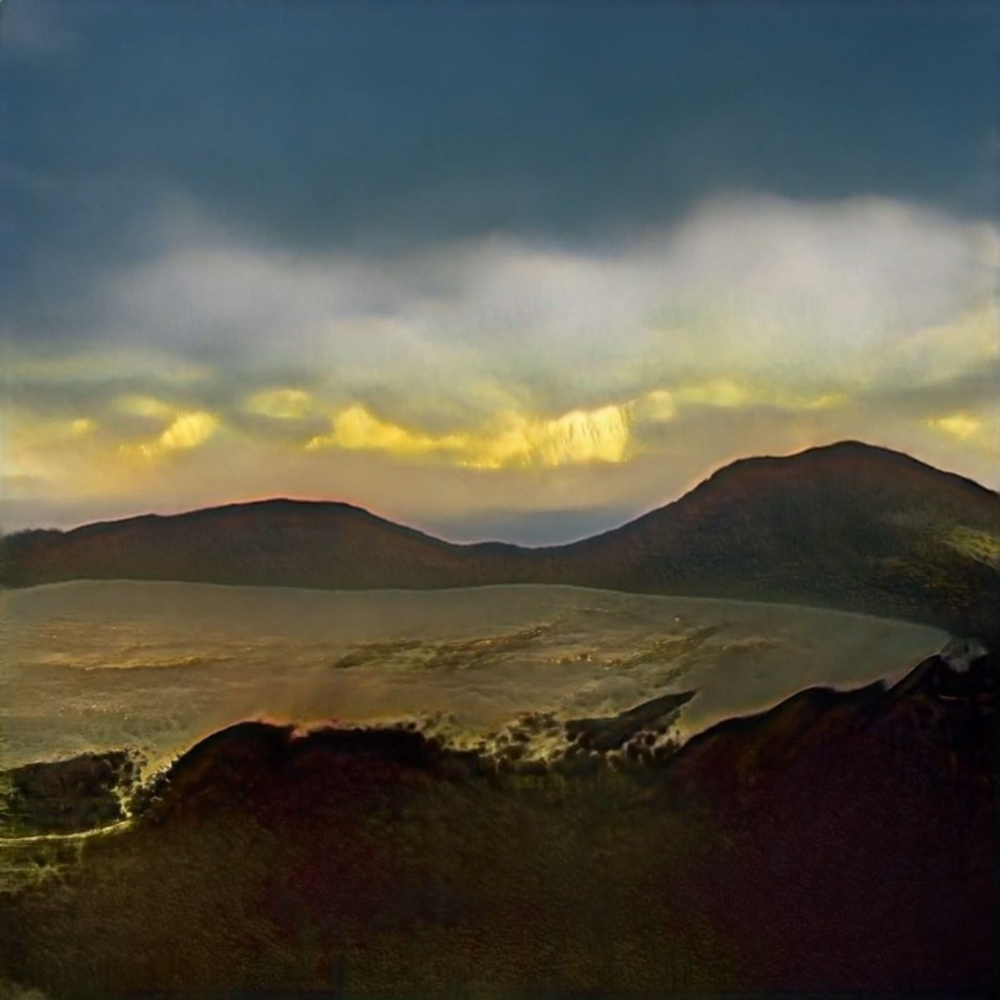
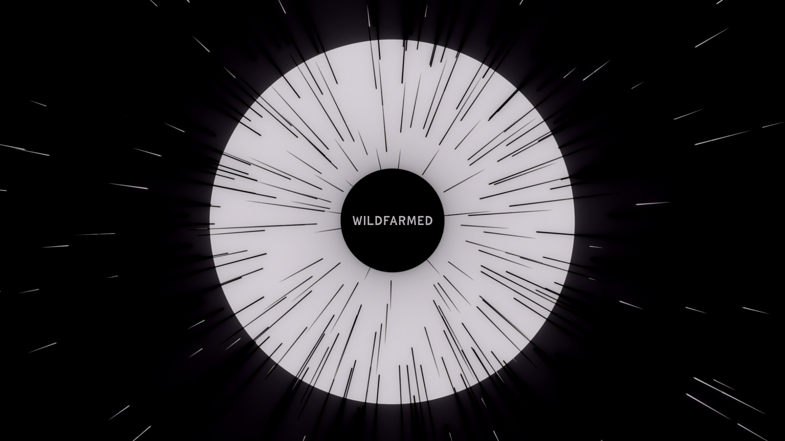